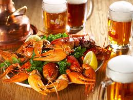

Что такое речные раки


В частности по материалам Сайтов:
http://fihingclub.ru/raki-i-lovlya-rakov/
http://www.kulina.ru/articles/64536/
http://cooking.ua/kak-varit-rakov.html
http://www.oster-vip.com.ua/news/kak-xranit-rakov.html
http://edaplus.info/produce/crawfish.html
http://hnb.com.ua/articles/s-zdorovie-raki-2657
Многие из нас любят полакомиться вареными раками, но мало кто догадывается о неоценимой пользе раков здоровья.
Кроме легкоусвояемого белка в состав ракового мяса входят фосфор, кальций, железо, кобальт, калий, магний. Присутствуют также витамины группы В, С, D, Е, K. Раковое мясо содержит фолиевую и органические кислоты, серу. При том, что калорийность этого продукта невысока, примерно 80 калорий на 100 г мяса рака.
Раков нужно употреблять и по медицинским показаниям при болезнях почек, поджелудочной железы, сердечной недостаточности. Употребление их в пищу способствует очищению печени и желчевыводящих путей.
Поскольку раки живут только в чистой среде, употреблять их можно без риска для здоровья, при условии, что при приготовлении их использовали обязательно живыми! Раки полезны после перенесенных различных заболеваний, особенно после лучевой терапии и операциях по удалению злокачественных опухолей.
Содержащийся в раках йод служит профилактикой заболеваний щитовидной железы и зоба. Эта еда полезна как взрослым, так и детям.
На этом целебные свойства раков не заканчиваются. Кроме полезного мяса рак ценен своим хитиновым покровом, который обладает ранозаживляющими свойствами и является антисептиком. Ученые выявили в хитиновом покрове раков особые вещества, которые обладают высокими регенерирующими свойствами и способствуют восстановлению пораженных злокачественной опухолью тканей. Известны рецепты древних медиков по использованию порошка из высушенных панцирей раков. Этим порошком посыпали раны для их быстрого заживления.
Можно сделать вывод, что польза раков для здоровья огромна! Будьте здоровы!